Mechanical Design
Developing high-torque, impact-resistant actuators from scratch was critical to this project. Standard planetary gearboxes were abandoned early in the design phase due to their inherent backlash. Cycloidal drives were selected specifically because their ultra-low backlash is a strict requirement for stable Reinforcement Learning (RL) sim-to-real transfer. Without a highly rigid, zero-slop drivetrain, the policy's high-frequency impedance commands would be lost or delayed before reaching the physical world, destroying simulation parity.
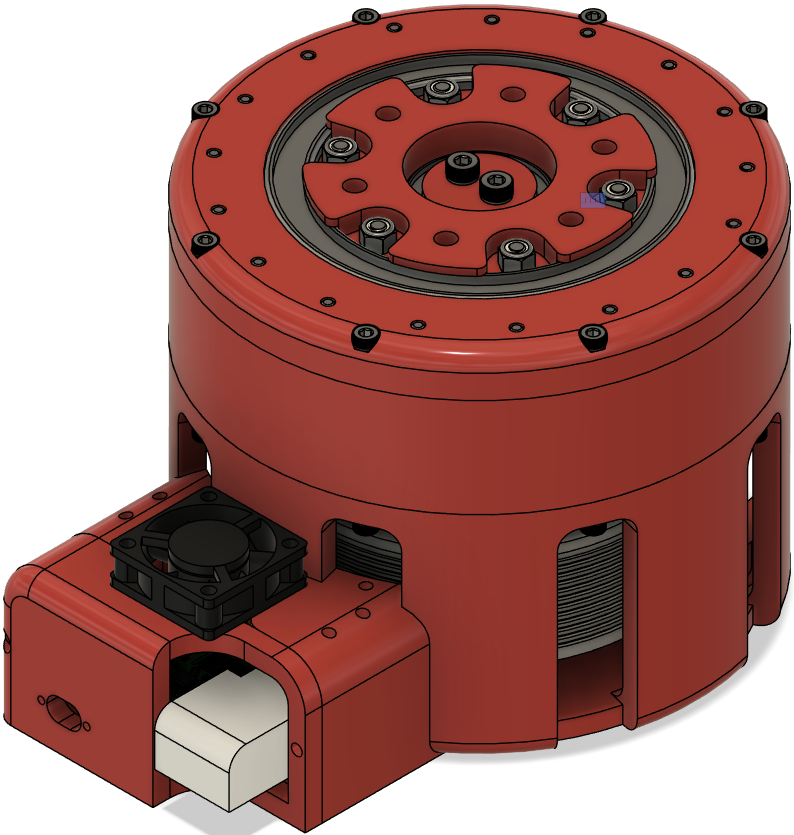
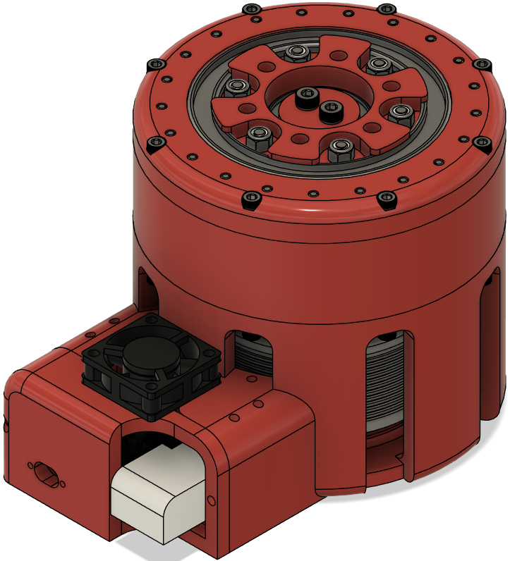
High-fidelity state estimation is achieved through a dual-encoder architecture linked via a GT2 timing belt. This setup connects the motor shaft directly to the gearbox output, allowing the system to simultaneously read the high-speed motor angle and the absolute output angle. To increase sensing resolution at the joint, the pulley system is geared so that the absolute output encoder rotates twice for every single full rotation of the physical output.
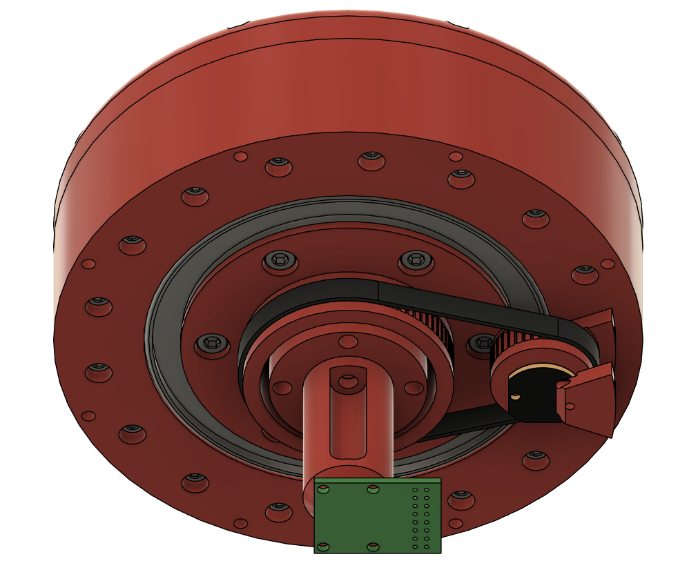
Peak dynamic loads on the large joints will regularly exceed 40 Nm. To support this, the housing relies on large-diameter, thin-section output bearings (e.g., 60mm ID / 78mm OD on the large joints) to handle massive radial and axial moment loads. To minimize friction and guarantee a zero-backlash transmission, the cycloidal mechanism relies entirely on rolling contact. Every actuator, regardless of scale, utilizes exactly six M4 screws to mount the inner roller bearings to the output disk. The outer housing features a parametrically scaling array of 3mm inner-diameter bearings acting as the outer pins.
Knowing the biped would require multiple actuator form factors (e.g., 16:1 for the large joints, 20:1
for the small joints), the entire ecosystem is built on a fully parametric CAD architecture in
Fusion 360. Rather than manually drafting discrete gearboxes, the assemblies are driven by strict
mathematical constraints. Base variables like gearRatio_Ref and
eccentricity_Ref automatically scale housing diameters, bearing clearances, and
mounting patterns. Furthermore, the core cycloidal disk is generated natively via parametric sketch
logic; the lobe profile is dynamically swept using a radial array driven by angular expressions tied
directly to the gear ratio. This guarantees that the theoretical gear math perfectly matches the
physical CAM geometry across all actuator sizes.
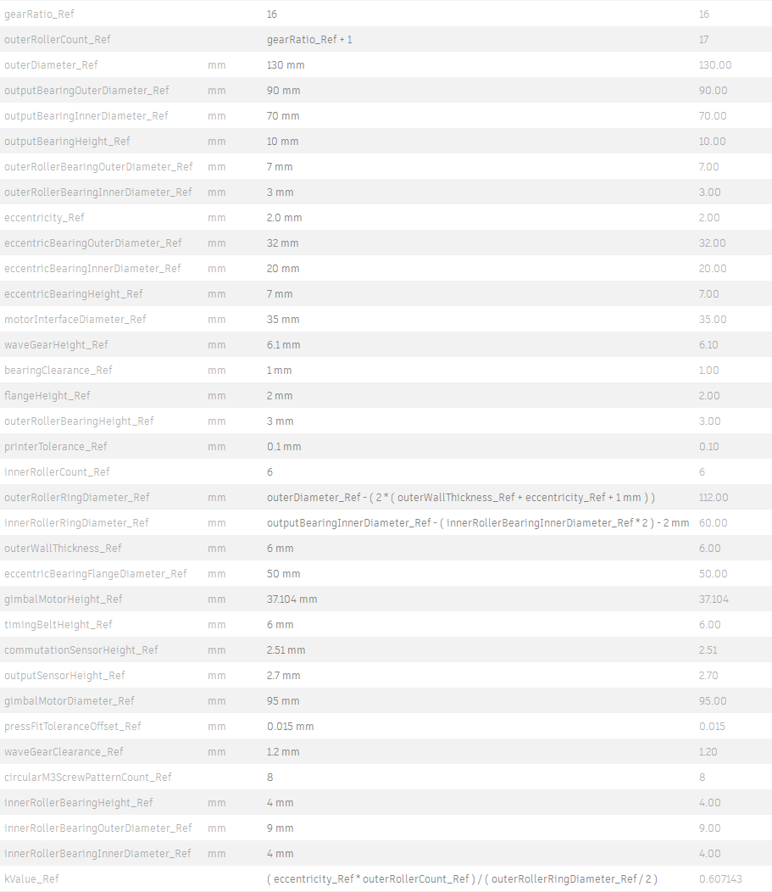
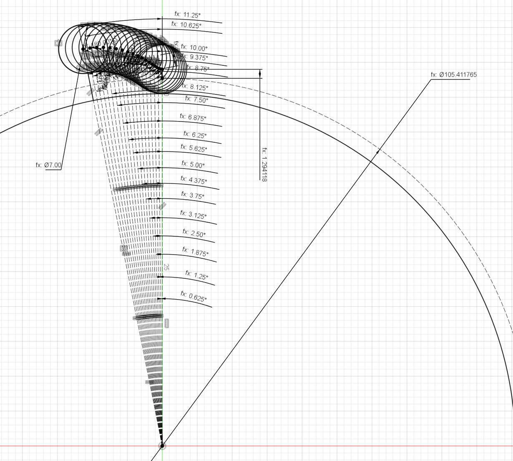
Electronics
Motor Selection: G80 & G60 Gimbal Motors
Before selecting the control electronics, the core powertrain had to be established. Rather than traditional high-speed brushless outrunners, G80 (KV60) and G60 (KV55) gimbal motors were chosen specifically for their high torque density and ultra-low KV ratings. Because cycloidal drives operate efficiently at lower gear ratios (e.g., 16:1 and 20:1), they require a motor that naturally outputs high torque at lower speeds. The G80 delivers a peak torque of 2.9 Nm at 16.3A, while the G60 delivers 1.75 Nm peak at 8.9A. These gimbal-style motors provide the exact direct-drive characteristics needed without relying on fragile, extreme-ratio gear sets.
Motor Driver: ST B-G431B-ESC1
The ST B-G431B-ESC1 was selected because it comfortably handles the robot's 24V power bus and can push up to 40A of peak phase current. This provides massive thermal headroom for the G80's 16.3A peak draw, ensuring the drivers won't overheat during continuous holding states. Beyond raw power, it packs a robust 3-phase inverter and an STM32G431 MCU into a footprint small enough to mount directly to the actuator housing. Crucially, this MCU features a hardware CORDIC math accelerator, allowing it to compute Field Oriented Control (FOC) algorithms with extremely low latency. Furthermore, while CAN bus is typical for distributed robotics, this board's onboard Micro USB was utilized for system communication. This completely eliminated the need for complex CAN transceiver soldering and allowed for highly convenient, direct-to-PC connections for rapid firmware debugging and FOC tuning.
Motor Encoder: AS5047P (A/B Incremental)
The motor shaft requires ultra-low latency tracking to prevent phase-lag during rapid torque transients. While a shared SPI bus between the two encoders would have been theoretically ideal, the highly compact B-G431B-ESC1 does not easily expose its SPI pins; utilizing them requires scraping solder mask off microscopic vias. To ensure physical reliability, the AS5047P instead communicates via an A/B Incremental interface. The ESC has native, easily accessible solder pads for this, providing the high-speed velocity data needed for commutation without hacking the board.
Joint Output Encoder: AS5048A (PWM)
The gearbox output moves slower but dictates the physical state of the robot. The AS5048A provides 14-bit absolute magnetic sensing, meaning the biped knows its exact joint angles the millisecond it boots up without a homing sequence. Because the incremental pads were already utilized by the motor encoder, this sensor communicates via a PWM (Pulse Width Modulation) signal. This elegantly simplifies the wiring topology down to just a single communication wire, sidestepping the complex soldering requirements of SPI while still delivering reliable state data back to the RL policy.
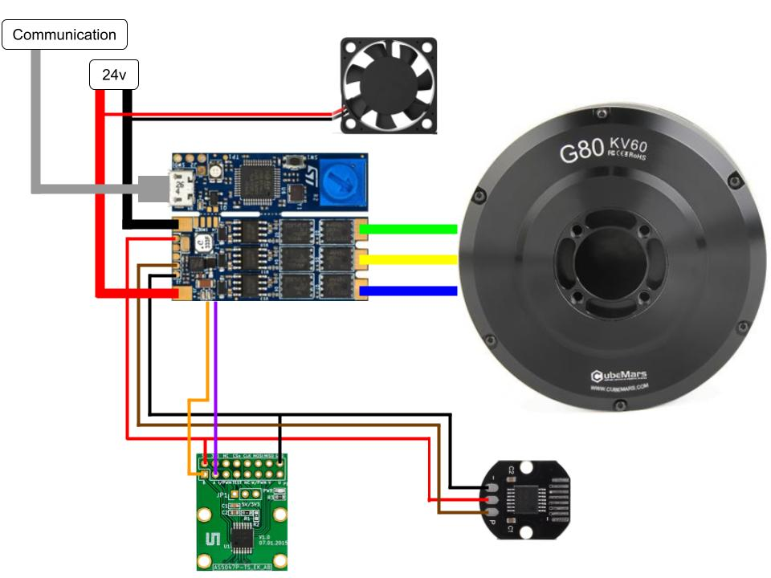
Firmware & Low-Level Control Strategy
The Sensor Fusion Pipeline
Because Reinforcement Learning policies calculate joint dynamics based on the output of the gearbox, the STM32 must provide a clean 1:1 hardware map of the joint's state. The firmware fuses data from both encoders simultaneously. Absolute position (q) is polled directly from the AS5048A PWM joint encoder. However, because PWM sensors can introduce slight latency in velocity calculations, the joint velocity (dq) is derived by polling the high-speed AS5047P incremental motor encoder and dividing by the 16:1 gear ratio. Both signals are then passed through lightweight software low-pass filters to eliminate high-frequency noise before entering the control loop.
Optimized Binary Telemetry & The Hardware Watchdog
To run a stable 50Hz RL policy on the master PC, communication overhead with the nodes must be near zero. String-based serial communication was entirely abandoned in favor of tightly packed 12-byte C++ structs over a 115200-baud UART connection. This keeps latency in the sub-millisecond range.
Furthermore, testing neural networks on a heavy 24V robot makes PC software crashes inevitable. If the PC freezes while commanding maximum stiffness, the robot could violently thrash. To prevent this, a hardcoded 500ms hardware watchdog guarantees the joint defaults to a safe, highly viscous damping state if PC comms are lost.
// 12-Byte Struct: PC -> STM32 (Optimized for pure impedance RL)
struct __attribute__((packed)) RLCommand {
float q_des;
float kp;
float kd;
} cmd = { 0.0f, 0.0f, 0.0f };
// --- 4. SAFETY WATCHDOG ---
// 0.5 seconds without PC comms triggers the damper
if (millis() - last_command_time > WATCHDOG_TIMEOUT_MS) {
cmd.kp = 0.0f;
cmd.kd = SAFE_DAMPING_KD;
}On-Board Impedance Control via SimpleFOC
In standard robotics, computers often send position targets and let the motor driver figure out the rest. In dynamic locomotion, the PC sends impedance parameters (Target Position, Kp, and Kd), and the STM32 calculates the required effort. Running at high frequency, the firmware calculates the position and velocity errors, applies the commanded stiffness and damping, and converts that desired joint torque into a raw phase current command.
Rather than reinventing the wheel for motor commutation, this phase current target is passed directly into the open-source SimpleFOC library. SimpleFOC efficiently handles the complex Field Oriented Control (FOC) math, utilizing the STM32's hardware accelerators to physically drive the inverter bridge with extreme precision.
// --- 5. IMPEDANCE CONTROL LAW ---
float pos_error = cmd.q_des - state.q_curr;
float vel_error = 0.0f - state.dq_curr;
// Pure PD control, computing desired joint effort
float joint_torque_nm = (cmd.kp * pos_error) + (cmd.kd * vel_error);
state.tau_cmd = joint_torque_nm;
// --- 6. GEARING & CURRENT CONVERSION ---
float motor_torque_nm = joint_torque_nm / GEAR_RATIO;
float current_command = motor_torque_nm / MOTOR_KT;
// Command Motor Phase Current via SimpleFOC
motor.move(-current_command);Calibration vs. Production Firmware
Two distinct firmware architectures were developed. The "Production" firmware (shown above) is stripped down purely for RL execution speed. However, setting up a new joint requires aligning the FOC electrical zero, finding the absolute zero of the physical limb, and mapping the encoder offsets. To handle this, a secondary "Calibration" firmware was written. This expands the structs to 16-bytes to allow feed-forward torque commands and raw motor-side angle telemetry, allowing custom Python calibration scripts to seamlessly tune new hardware before deployment.
Manufacturing & Calibration Pipeline
3D Printing & Structural Plastics
To keep the actuator lightweight but capable of handling the high impact forces of bipedal locomotion, the structural housings were 3D printed in PETG. All parts were sliced for a 0.6mm nozzle to increase layer adhesion and print speed. To optimize for strength, standard outer shells were printed with 3 wall perimeters, while high-stress internal transmission components (like the cycloidal cam and output carriers) were reinforced with 4 wall perimeters.
CNC Machining the Cycloidal Disks
While plastic is excellent for housings, the core cycloidal disks bear the full brunt of the torque multiplication. These dual disks were machined out of 1/4" thick aluminum stock using a Genmitsu 3020 desktop CNC router. Milling these in-house allowed for rapid iteration of the cycloidal tooth profile to find the perfect balance between zero-backlash and smooth rolling contact.
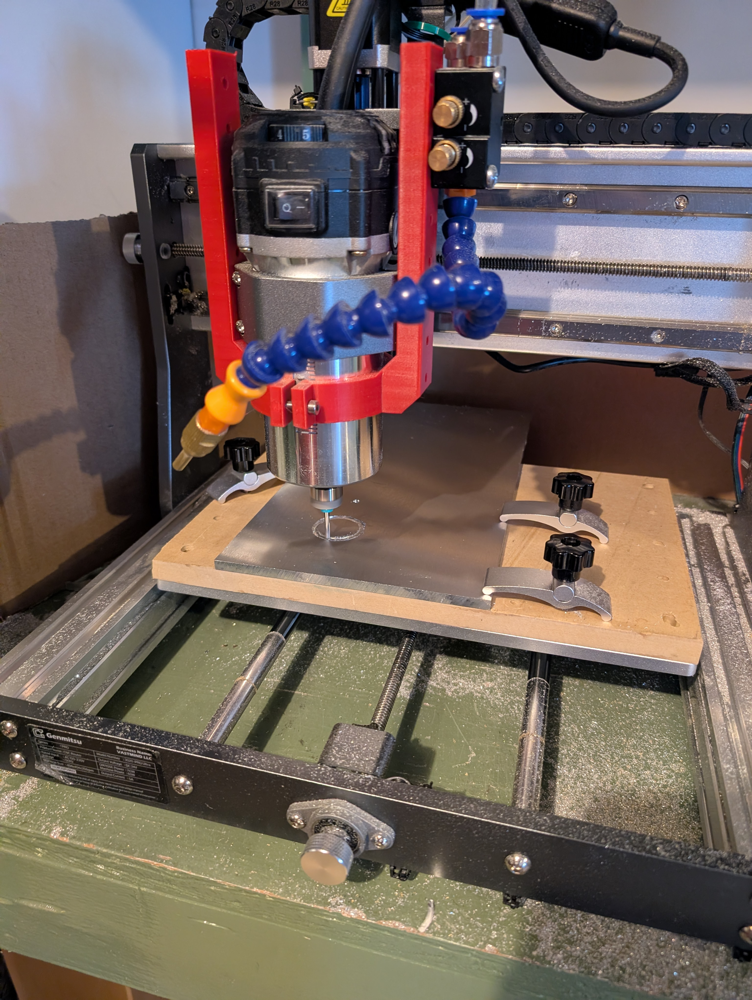
Bottom-Up Assembly
The actuator is designed for a modular, bottom-to-top assembly process. It begins with soldering the STM32 driver board and encoder daisy-chain, which is then seated into the bottom drive module alongside the brushless gimbal motor. Once the electrical baseline is secured, the cycloidal gearbox, bearings, and aluminum disks are stacked and fastened on top, sealing the unit.
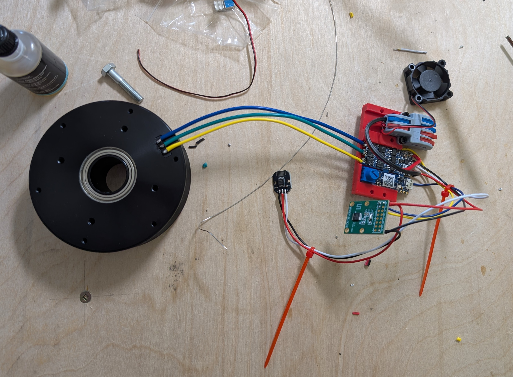
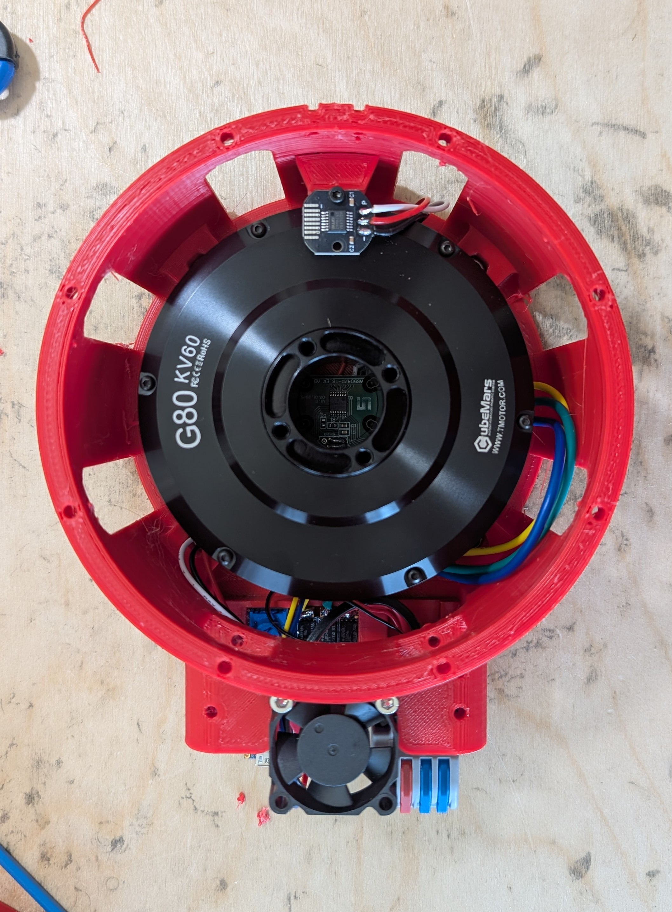
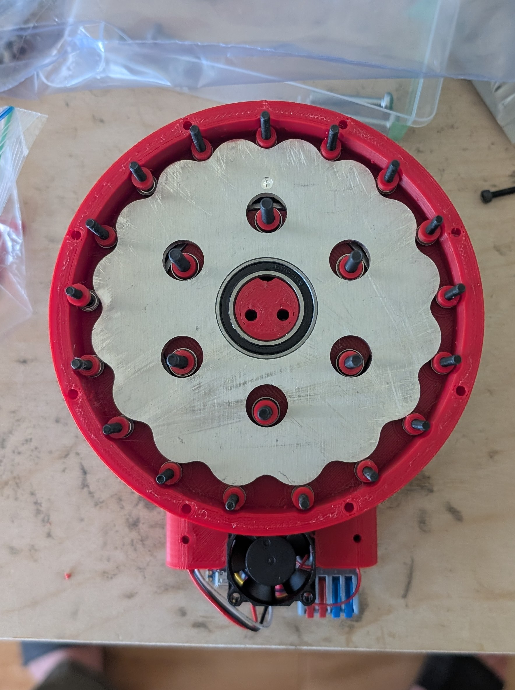
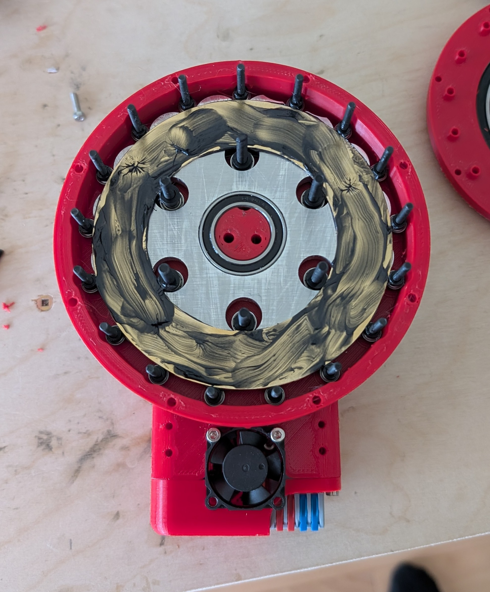
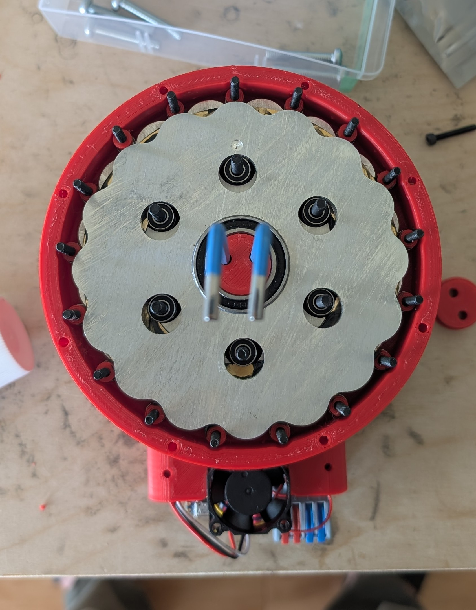
Automated Joint Calibration
Every joint on the robot has tiny physical variations. To manage this, the biped relies on a master
biped_actuator_config.json file, which acts as a centralized database storing the
specific zero-offsets, gear ratios, friction profiles, and hardware IDs for every actuator on the
robot.
Phase 1: Manual Zeroing
When a new actuator is built, it must be aligned to the robot's physical coordinate frame. Using a
custom Python script (manual_zeroing.py), the STM32 is commanded into a limp state
(Kp=0, Kd=0). The joint is physically locked into its perfectly straight "zero" position on the
workbench, and the script reads the raw absolute angle from the output encoder. This value is
hardcoded into the JSON config as the joint's permanent zero-offset.
Phase 2: The Full Calibration Sequence
Once zeroed, the actuator runs through a fully automated Python sequence
(full_calibration.py) to map its exact dynamic properties before being cleared for
deployment:
- Hardware Recognition: Scans COM ports, reads the ST-Link serial number, and cross-references the JSON config to identify the specific joint.
- Automated Flashing: Uses the Arduino CLI to autonomously compile and flash the specialized 16-byte calibration firmware.
- Encoder Synchronization: Commands a 10-second rotational sweep, tracking both encoders to verify the gear ratio mapping is flawlessly synchronized.
- Smart Friction Mapping: Gently ramps motor torque to detect physical breakaway (static friction), then runs dynamic tests to measure terminal velocity.
- Data Deployment: Calculates the exact internal damping and friction coefficients via linear regression, saves them back to the JSON, and flashes the Production Firmware back onto the board.